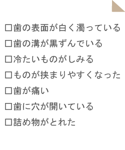
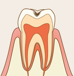
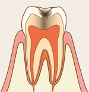
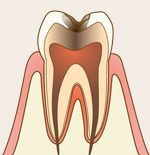
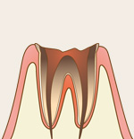

むし歯の原因
虫歯は、虫歯菌に感染することで発症する病気です。歯の表面で繁殖した虫歯菌が「酸」を作り出して、エナメル質や象牙質を溶かしていきます。虫歯菌によって溶かされた歯質は、再生することがありません。それだけに、虫歯は早期発見・早期治療が何よりも重要といえます。
むし歯が疑われる症状

この中で1つでも当てはまる症状が見つかった場合は当院までご相談ください
むし歯の進行と処置
CO(初期むし歯）
C1(エナメル質の虫歯)
エナメル質の虫歯では、歯の表面に比較的浅い穴が生じます。虫歯菌によって歯質が溶かされている証拠です。痛みを感じることはありません。虫歯菌が感染しているエナメル質を削り、コンポジットレジンを詰めることで治療が完了します。
C2(象牙質の虫歯)
象牙質の虫歯では、歯の表面に比較的深い穴が生じます。象牙質には、歯の神経が一部入り込んでいることから、痛みを感じたり、冷たいものや甘いものがしみたりするようになります。感染した歯質を削って、詰め物や被せ物を装着します。
C3(歯の神経まで進行した虫歯)
虫歯菌が歯の神経にまで到達すると、強い痛みを生じるようになります。歯の神経を抜き取る「抜髄（ばつずい）」を行うことで、虫歯の症状を改善させます。その後は歯の根っこの治療を行い、被せ物を装着することで治療が完了します。
C4(歯根だけの残った虫歯)
歯の頭の部分である歯冠が崩壊し、歯根だけ残った虫歯を「残根状態（ざんこんじょうたい）」といいます。虫歯がこの状態まで進行すると、「抜歯（ばっし）」という選択肢も視野にいれなければなりません。根管治療が成功すれば、被せ物を装着することで歯を残すことができます。
発生して間もない初期の虫歯は、歯を削らなくても治すことができます。歯の表面にフッ素を塗布して、虫歯菌への抵抗力を高めます。ブラッシング指導を受けることで、それ以上、虫歯が大きくならないように努めることも大切です。